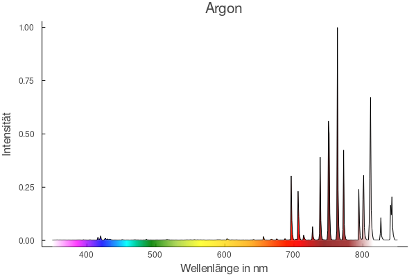
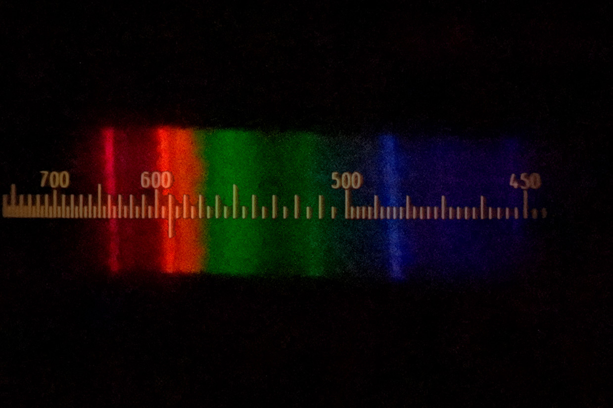

CCD-Spektrometer



Das Spektrum der Argon-Lampe ist ein Linienspektrum. Die Linien liegen in dem für uns sichtbaren roten Bereich und im unsichtbaren infraroten Bereich. Die intensivsten Linien sind bei den Wellenlängen 763 nm, 811 nm und 851 nm.